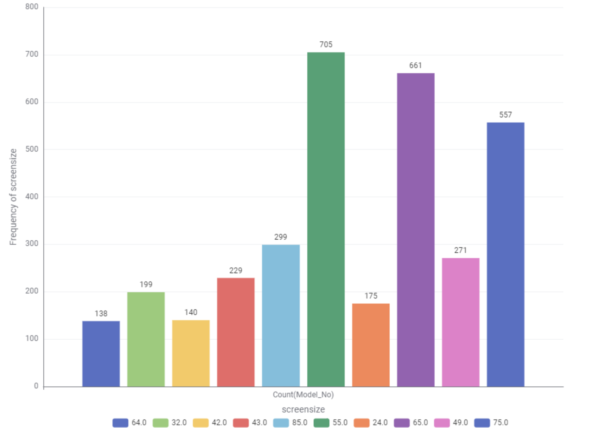

Television Energy Tips
Energy-Saving Tips for Televisions
- Choose an energy-efficient model with a high star rating.
- Turn off the TV when not in use instead of leaving it on standby.
- Reduce screen brightness to lower energy consumption.
- Use a power strip to easily turn off multiple devices at once.
- Consider using a smaller screen size if it meets your viewing needs.
Example annual consumption in Australia:
- 32-inch LED TV: ~60–80 kWh per year (≈ $20–25 electricity cost)
- 55-inch LED TV: ~120–150 kWh per year (≈ $40–50 electricity cost)
- 65-inch OLED TV: ~180–220 kWh per year (≈ $65–75 electricity cost)
*Costs based on Australian average electricity price of ~$0.30 per kWh. For more information on energy-efficient appliances, visit the Australian Government's Energy Rating website.
Television Insight: Data Story
Televisions are a common household appliance, and their energy consumption can vary significantly based on the type, size, and usage patterns. Here are some tips to help you make smarter decision on televisions:
Chart 1: Which screen technologies are most common?
This chart illustrates the average annual energy consumption of various television types and sizes available in Australia.
Chart 2: Which screen sizes are most popular?
Screen size popularity helps you understand what most households choose, so you can decide what fits best for you.
Chart 3: Which brands have the most models?
Brands with more models often give consumers more choice and variety.
Chart 4: Which screen type uses the least power?
This comparison shows average power consumption by technology, highlighting the most efficient choice.
Chart 5: Which screen type uses the least power?
A scatter plot shows the relationship between screen size and power use, helping you budget electricity costs.
Chart 6: How does screen size affect power use?
This box plot compares power consumption across different brands, so you can see which brands are more efficient.